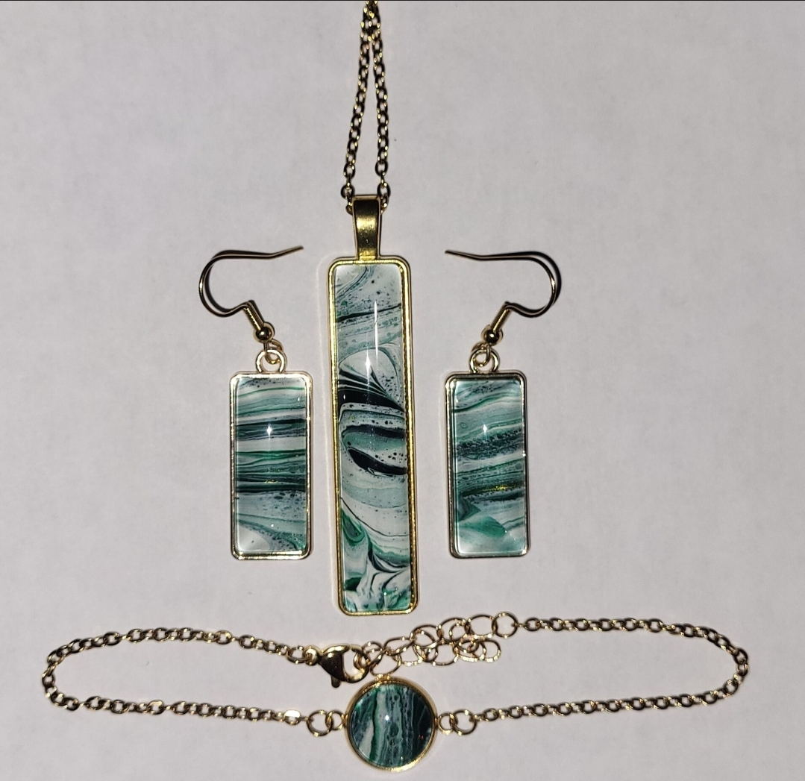
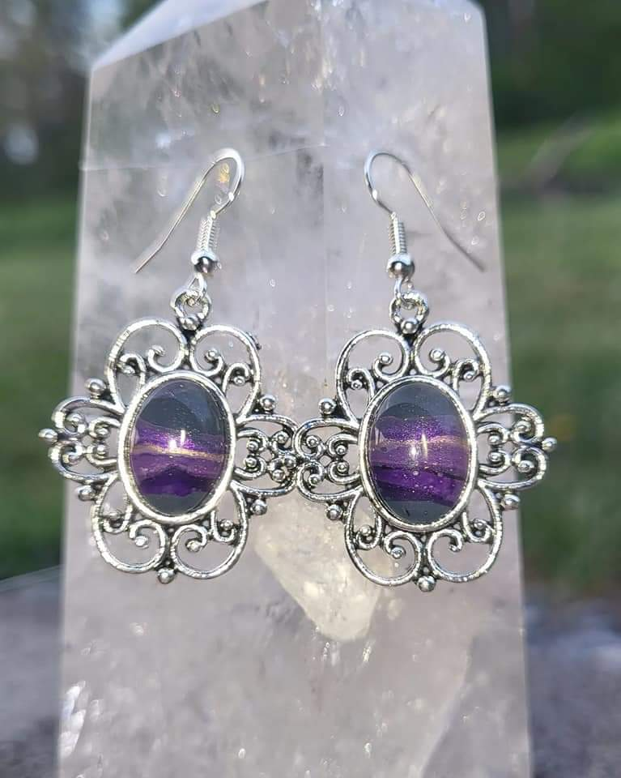
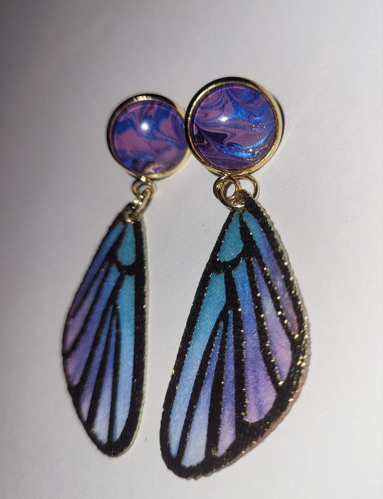

Funky Color Shift Wooden Handpainted Glass Necklace
Hand painted glass in a wooden setting.

Wooden Handpainted Glass Necklace Rainbow Colors
Hand painted acrylic on glass wooden pendant. Play with all the colors of this rainbow in this beautiful pendant with a tie-dye feel.

Green Striped Hand PaintedEarrings
Hand painted acrylic on glass earrings. These beautiful green striped earrings hold the colors of the rainbow and a fun hint of shimmer.

Green Fluid Art Necklace, Earrings, and Bracelet Set
Elegant hand painted necklace, bracelet and earrings set. Green hand painted glass in a gold plated setting. Comes with 24 inch necklace chain. Bracelet adjustable from 7-10 inches

Purple and Grey Hand Painted Round Glass in Floral Antique Setting Earrings
Hand painted acrylic on glass earrings. These beautiful purple striped earrings are a bold statement to any outfit.

Delicate Purple and Blue Butterfly Wing Hand Painted Glass Earrings
Hand painted acrylic on glass earrings. Blue and purple swirl with metallic shimmer above delicate butterfly wings.